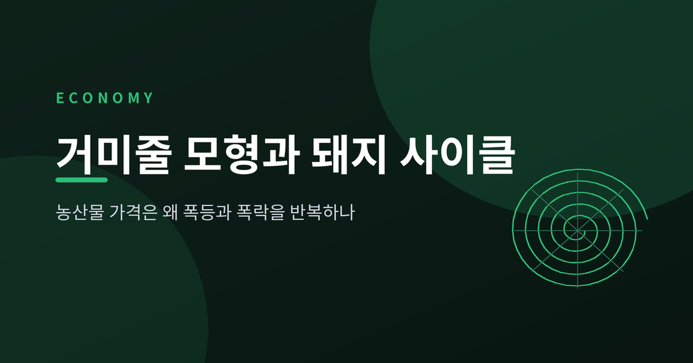
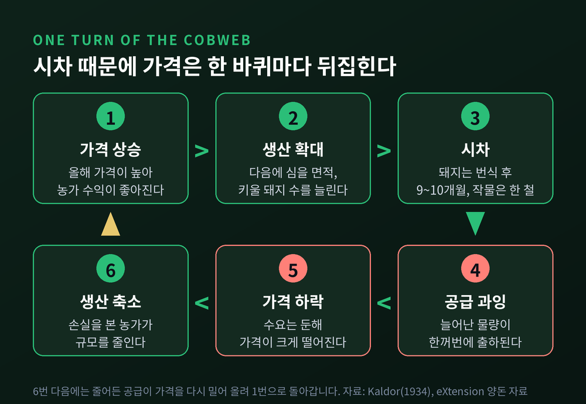
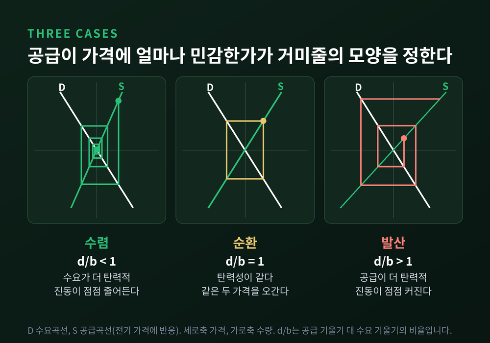
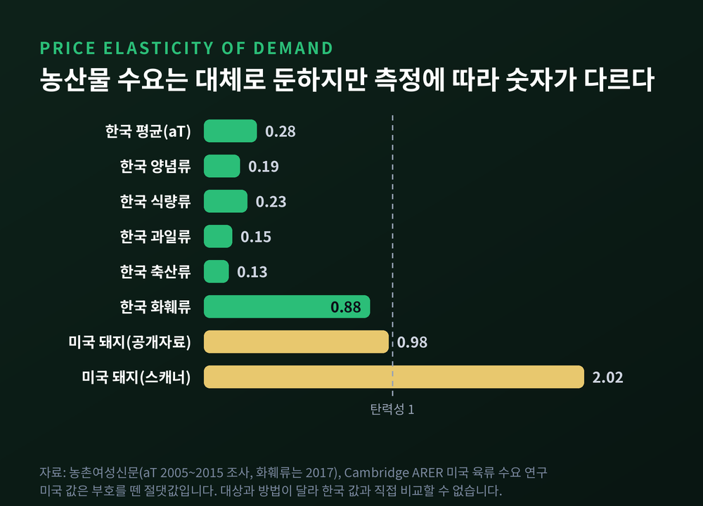
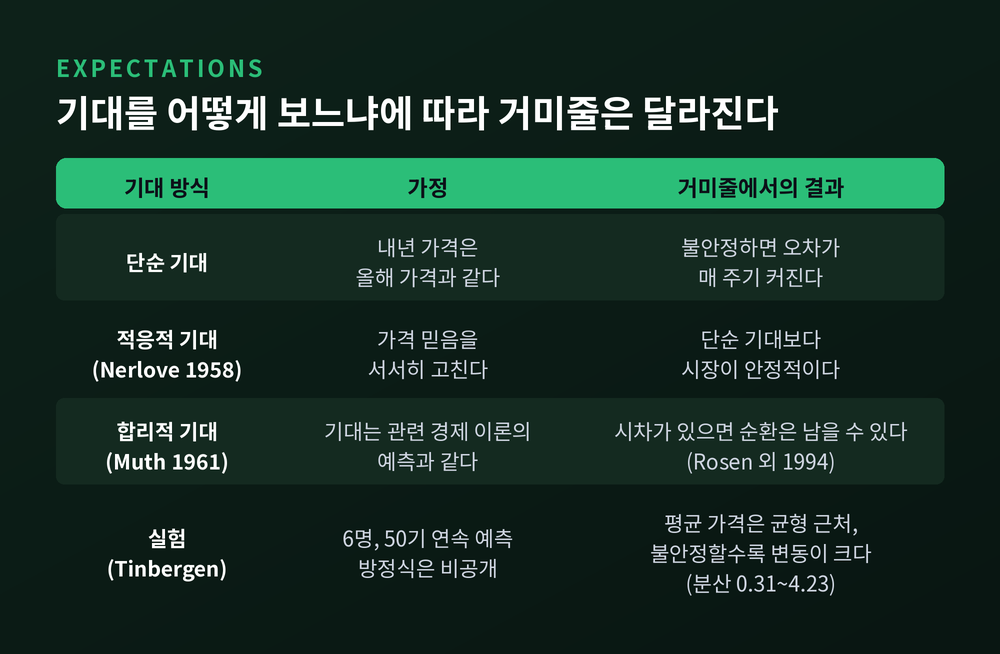
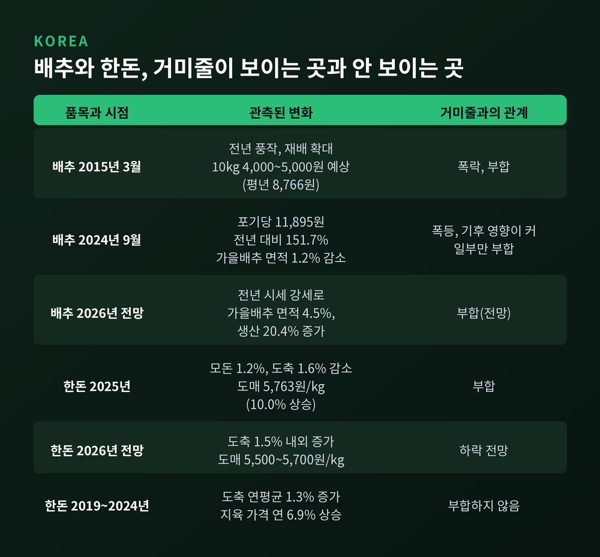

이번 글에서는 농산물 가격이 폭등과 폭락을 번갈아 반복하는 이유를 거미줄 모형(cobweb model)으로 정리해 보겠습니다. 돼지 사이클이라는 이름으로도 불리는 이 현상이 왜 생기는지, 어떤 조건에서 가라앉고 어떤 조건에서 커지는지, 한국의 배추와 한돈에는 어떻게 비치는지 차례로 살펴봅니다.
먼저 답부터 드리겠습니다.
거미줄 모형은 생산과 출하 사이의 시차에서 출발합니다. 농업이 대표적입니다. 파종과 수확 사이에 시간이 걸리기 때문입니다.
니컬러스 칼도어가 1934년에 이 이론에 '거미줄 정리'라는 이름을 붙였습니다. 모르데카이 에제키엘이 1938년 논문 「The Cobweb Theorem」으로 널리 알렸고, 아서 하나우는 1928년 독일 돼지 시장의 변동을 기록했습니다.
돼지가 가장 좋은 예입니다. 미국 확장(Extension) 자료에 따르면 번식 후 추가 돼지가 시장에 나오기까지 9~10개월이 걸립니다. 번식돈을 확보하고 규모를 늘리기까지 유리한 수익이 3~6개월은 이어져야 합니다.
그래서 순서가 이렇게 흘러갑니다. 가격이 오릅니다. 농가가 사육을 늘립니다. 한참 뒤 물량이 한꺼번에 나와 가격이 떨어집니다. 농가가 사육을 줄입니다. 이번에는 물량이 모자라 가격이 다시 오릅니다.

미국 자료로 보면 가격 주기는 평균 2.9년(1950~85년), 생산 주기는 평균 4.5년(1950~86년)이었습니다. 생산이 늘 때 가격은 대체로 내리막이고, 생산이 줄 때는 오르막이었습니다.
같은 시차가 있어도 모든 시장이 같은 길을 걷지는 않습니다. 갈림길은 수요와 공급이 가격에 얼마나 민감한가입니다.
식으로 보면 단순합니다. 수요를 Qd = a − bP, 공급을 이전 기 가격에 반응하는 Qs = c + dP(t−1)로 두면, 가격이 균형에서 벗어난 폭은 한 주기마다 (−d/b)배가 됩니다. d/b가 1보다 작으면 줄고, 1이면 그대로, 1보다 크면 커집니다.

실험 연구도 같은 기준을 씁니다. 틴베르헌연구소에서 발표된 거미줄 실험은 공급 기울기와 수요 기울기의 비율 σ를 안정성 계수로 삼았고, 처치별 값은 −0.87에서 −7.75까지였습니다. 절댓값이 1보다 작은 쪽이 안정 시장입니다.
다만 이 조건이 현실을 그대로 말해 주지는 않습니다. 칼도어는 단기 탄력성과 장기 탄력성의 차이를 무시한다고 비판했습니다. 이후 비선형 함수, 저장, 조정 속도가 모형에 더해졌습니다. 발산하던 경로가 일정한 폭을 오가는 한계 순환으로 바뀔 수 있다는 설명도 있습니다.
농산물은 가격이 올랐다고 덜 먹기 어려운 물건입니다. 한국농수산식품유통공사 조사를 인용한 기사에 따르면 2005~2015년 주요 농축산물의 평균 가격탄력성은 0.28이었습니다. 양념류 0.19, 식량류 0.23, 과일류 0.15, 축산류 0.13입니다.
수요가 이렇게 둔하면 같은 공급 변화도 가격에서는 크게 증폭됩니다. 농가가 가격에 민감하게 면적과 두수를 바꿀수록 발산 쪽으로 기웁니다.
단, 숫자를 그대로 믿기에는 조심할 부분이 있습니다. 미국 육류 수요 연구는 공개 자료 기준으로 돼지고기 −0.978, 스캐너 자료 기준으로 −2.016을 얻었습니다. 한국의 축산류 0.13과는 대상도 방법도 달라 직접 비교할 수 없습니다. 탄력성은 어떻게 재느냐에 따라 달라지는 숫자입니다.

거미줄 모형의 약한 고리는 기대입니다. 가장 단순한 형태는 "내년 가격은 올해 가격과 같다"고 믿는 것입니다. 불안정한 경우라면 농민의 오차가 매 주기 커지는데도 배우지 못한다는 이야기가 됩니다.
존 무스는 1961년 논문에서 이 점을 짚었습니다. 그는 기대가 "정보에 입각한 예측이므로 관련 경제 이론의 예측과 본질적으로 같다"고 보았고, 거미줄 모형은 농민이 경험에서 배우지 못한다는 함의를 지닌다고 지적했습니다. 앞서 1958년 마크 널러브는 가격 믿음을 서서히 고치는 적응적 기대를 도입해 시장이 더 안정적으로 움직이도록 했습니다.
그렇다면 실제 사람은 어떨까요. 틴베르헌연구소의 실험에서 6명 한 그룹이 시장 방정식을 모른 채 50기 연속 가격을 예측했습니다. 18개 그룹 중 17개에서 평균 가격은 합리적 기대 균형에 가까웠습니다. 안정 시장에서는 분산도 기준값(0.25)에 근접했습니다. 그러나 불안정 시장에서는 평균은 맞아도 그 주변의 변동이 계속 컸습니다.

시차 자체가 순환을 만든다는 반론도 있습니다. 로젠, 머피, 샤인크먼은 1994년 논문에서 소의 번식 시차를 반영한 모형이 1875~1990년 자료에 매우 잘 맞는다고 보였습니다.
예전엔 순환의 원인을 농민의 근시안에서 찾았습니다. 지금은 합리적인 농민이라도 시차가 있으면 순환이 남는다고 봅니다.
배추는 거미줄이 가장 잘 비치는 품목입니다. 한국농촌경제연구원은 마땅한 대체작목이 없어 전년도 가격에 따라 당해 연도의 재배면적 변화가 심하다고 설명한 바 있습니다.
2015년 3월은 폭락 쪽입니다. 전년 풍작과 재배 확대가 겹쳐 공급이 넘쳤고, 한국농촌경제연구원은 도매가를 10kg당 4,000~5,000원으로 내다봤는데, 평년(8,766원)의 절반 정도였습니다.
2024년 9월은 폭등 쪽입니다. 9월 23일 도매가는 포기당 11,895원으로 평년보다 98.3%, 전년보다 151.7% 높았습니다. 정부는 중국산 배추를 들여왔는데, 2010·2011·2012·2022년에 이은 역대 5번째였습니다. 가을배추 재배면적은 전년 13,152ha에서 12,998ha로 1.2% 줄어 5년 만에 가장 작았습니다.
면적 감소 폭이 작다는 점은 기억해 둘 만합니다. 정부 자료가 든 원인은 재배면적 감소와 함께 극심한 가뭄과 이례적 고온이었습니다. 이 폭등을 거미줄만으로 설명하면 과장입니다.
이후 농업전망 2025는 전년 가격이 좋았던 영향으로 무 생산이 17.3%, 배추 생산이 2.6% 늘 것으로 내다봤습니다. 농업전망 2026도 같은 장면입니다. 전년 동기 시세가 강해 가을배추 재배면적이 4.5%, 생산이 20.4% 늘 것으로 전망했고, 시세가 약했던 봄·여름·겨울배추는 생산이 2~4% 줄 것으로 보았습니다.
한돈은 2025년이 거미줄 모양에 가깝습니다. 농촌경제연구원 자료로 2025년 모돈은 95만 1천 마리로 1.2% 줄었고, 도축은 1,870만 9천 마리로 1.6% 줄었습니다. 도매가격은 kg당 5,763원으로 10.0% 올랐습니다. 2026년은 국내 공급이 늘어 5,500~5,700원으로 내릴 것이라는 전망입니다.
그러나 한 해의 모양으로 결론을 내릴 수는 없습니다. 한돈뉴스의 분석에 따르면 2019~2024년 도축 두수는 연평균 1.3% 늘었는데 지육 가격은 연 6.9%가량 올랐습니다. 공급과 가격 사이에 뚜렷한 상관이 보이지 않는다는 결론이었습니다. 2025년에는 구제역, 아프리카돼지열병 등 질병과 폭염으로 인한 폐사 증가도 있었습니다.
미국에서도 모양은 달라졌습니다. 미국 농무부 경제연구청은 돼지 생산 주기가 과거보다 덜 뚜렷하고 더 가변적이며, 대규모 전문화로 생산자가 가격에 덜 반응하게 됐다고 설명합니다.

시차를 줄이는 도구도 있습니다. 농업관측으로 적정 재배면적을 유도하고, 비축과 수입으로 충격을 누그러뜨립니다. 2023년 4월 정부의 배추 비축 방출량은 4,654톤으로 과거 5년 평균(996톤)의 4.7배였습니다.
정리하면 이렇습니다.
가격 신호는 정확해도 도착이 늦습니다. 거미줄 모형은 그 지연이 농민의 어리석음이 아니라 구조에서 나온다는 점을 보여 줍니다.
"가격은 오늘 정해지지만, 공급은 내일 도착한다."
폭등한 가격표 앞에서 농가를 탓하기보다 시차를 줄일 방법을 먼저 묻는다면, 다음 폭락은 조금 더 얕아지지 않을까 생각합니다.